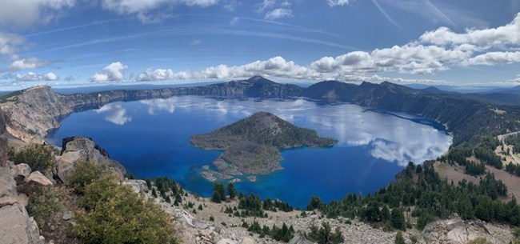
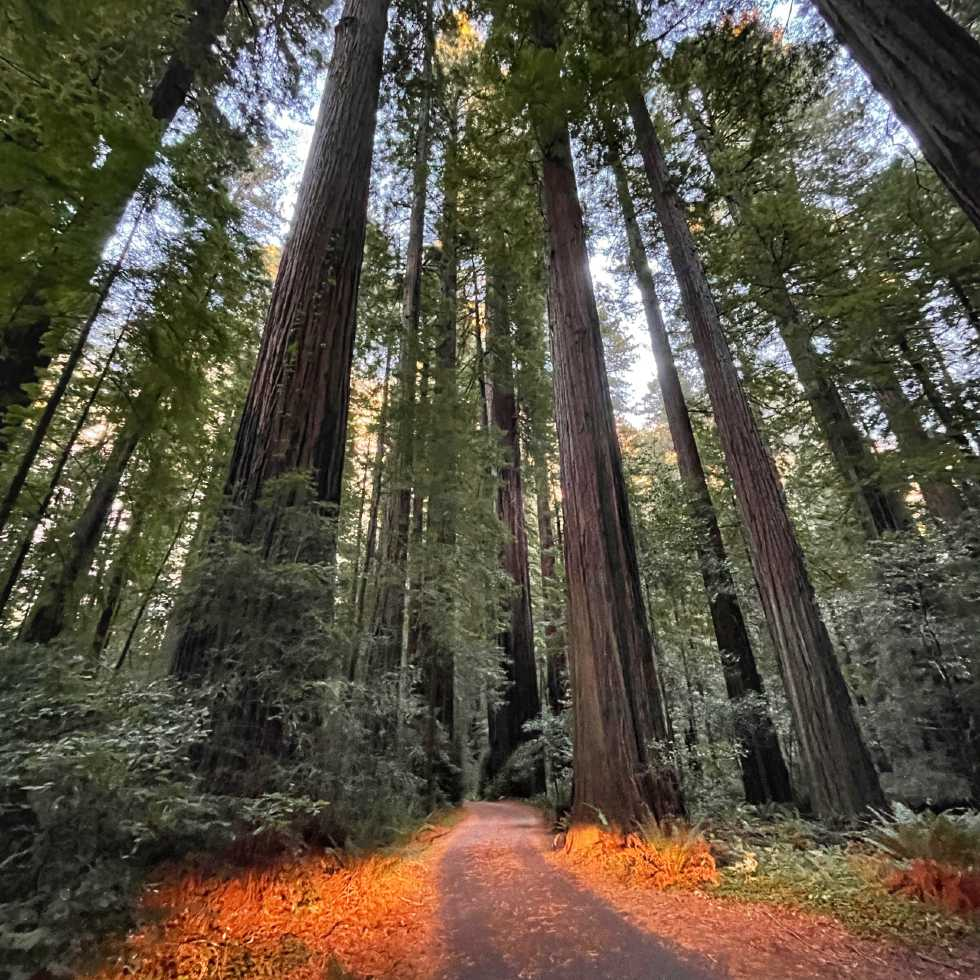
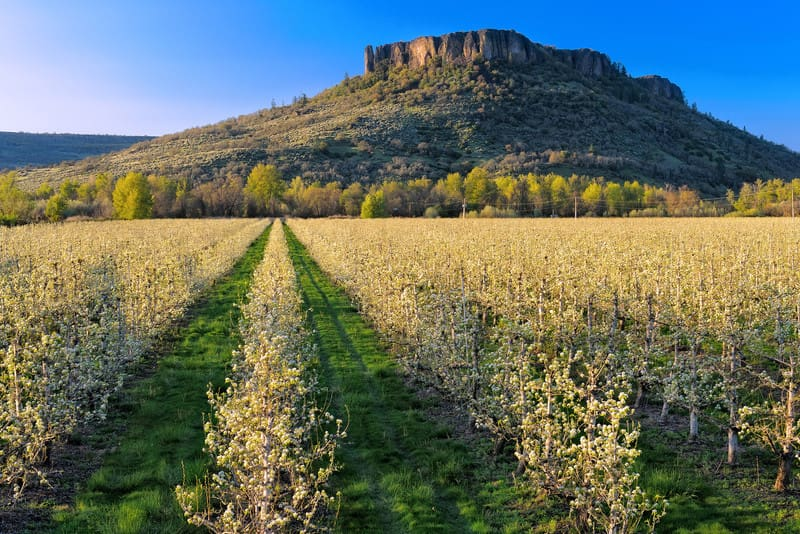

Explore Oregon
Growing up in the beautiful state of Oregon, surrounded by its lush forests, rugged coastline, and stunning mountain ranges, my childhood was filled with outdoor adventures, from hiking and camping to exploring tide pools and scenic trails. These experiences instilled in me a deep love for nature, and I’m passionate about sharing the beauty of Oregon’s landscapes with others.
Quick Fact: Did you know that every inch of Oregon’s coastline is publicly accessible?
My Favorite Places
- Crater Lake:
- Clean enough to drink
- Deepest lake in the United States
- The Redwoods:
- Tallest trees in the world
- Thousands of years old
- The Coast:
- 11 lighthouses
- Pristine stony coastlines
- Table Rock:
- Beautiful lava rock formation
- 7 million years old
- Mt. McLoughlin:
- Overlooks the Rogue Valley at 9,493 feet
- Lies in the Cascade Mountain Range
Photo Gallery



Watch the Beauty of Oregon
Visit Oregon